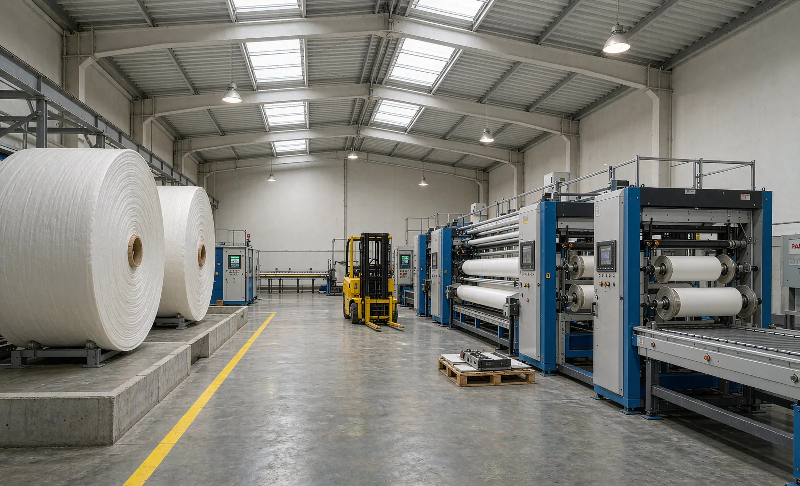
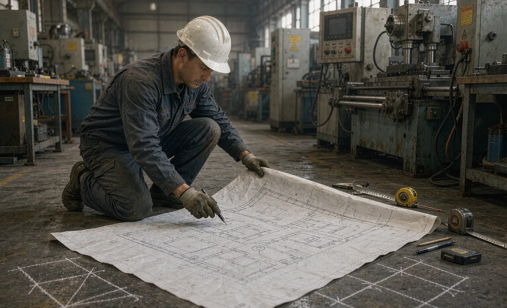

Published September 18, 2026 | By HDPTH Technical Editorial Team

When converters compare machines, they compare speed, width and price. What they inherit with the machine, however, is a floor plan: where parent rolls enter, where finished rolls leave, how far forklifts travel, and whether maintenance is possible without dismantling the neighbors. A poorly placed line taxes every shift with extra handling, and the tax compounds over years — often exceeding the machine’s purchase price before it is retired. Layout is a buyer’s decision made once, at the right moment: during the purchase, while the supplier’s engineering support is still free. This guide walks through the decisions in order.
Design the flow loop before the floor plan
Start with the complete journey of material, not with machine positions. Parent rolls arrive, are staged, stored, then moved to the unwind; finished rolls leave the rewind, are inspected, packed and dispatched; trim, cores and packaging waste flow back out. Draw this loop on the building plan and mark every handling move. The design targets are simple: every parent roll should reach the unwind in one handling move from storage; finished rolls should leave the rewind zone without forklifts crossing the operator aisle of a running line; waste routes should never share floor space with fresh material. The distance between the loop’s endpoints decides the building’s shape — straight-through layouts suit long buildings with receiving and dispatch at opposite ends; U-shaped layouts bring receiving and dispatch to the same side, shortening external logistics in compact buildings; parallel lines share aisles and utilities but demand routing discipline between them.
Machine placement: real maintenance space, not drawing clearance
Assembly drawings show footprints; they do not show a 2-meter shaft being withdrawn, a cabinet door opening, or a roll car maneuvering into the unwind. For each machine, reserve: full-length operator access along the web path; an unwind zone sized for the loading equipment — hoist beam height, clamp-truck turning radius, or the travel of an integrated roll-loading system; drive-side access with all cabinet doors open; and pull-out space for the longest shaft and largest roller. A workable baseline is 1.2–1.5 meters of maintenance access around operational sides plus dedicated pull-out and loading zones, confirmed against the machine’s service manual. Machines pushed wall-tight to save floor surrender hours at every service event — and the routine maintenance a line needs never shrinks to match the room it was given.
| Layout zone | Planning question | Cost of getting it wrong |
|---|---|---|
| Parent roll receiving and storage | One handling move to the unwind? FIFO possible? Heaviest rolls nearest? | Daily double-handling; edge damage; aging waste |
| Machine access | Shaft pull-out, cabinet doors, operator path along the full web run? | Every maintenance task slows; some become two-person jobs |
| Finished roll takeaway | Do forklifts cross a running line’s operator aisle? Unloading space at peak? | Blocked rewind, safety exposure, delayed changeovers |
| Utilities routing | Power, air, dust extraction and data routed without crossing future aisles? | Retrofits after installation cost multiples of first-time work |
| Expansion reserve | Can a second line share mains, aisles and staff facilities without redesign? | Line two costs more in disruption than in machines |
Floor and utilities: the checks that come before the price
Three floor properties decide whether a good machine performs on your slab. Flatness and level tolerance across the machine footprint determine whether rolls will be shimmed or will run true from day one. Load capacity matters at anchor points and along forklift routes — a loaded parent roll plus handling equipment concentrates impressive forces on modest slab sections. Joint and slab condition matter where vibration-sensitive equipment sits. Then walk the utilities: power capacity at the machine, compressed air points, the actual duct route to the extraction system, and any climate requirements for your materials. Do this walk with the supplier during layout design, not after delivery. Our site preparation checklist covers these items machine-by-machine; layout planning turns them from a punch list into a coherent floor plan.
Planning for the line you will add later
Most buyers underestimate how soon the second line question arrives. The cheap time to answer it is now: place the first line so the second can share utility mains, aisles and staff facilities without redesign; oversize utility mains and install spare ducting and cable trays during the first installation, when the marginal cost is small; keep the future line’s receiving and dispatch path clear of permanent racking; and standardize handling equipment across both lines. A second line dropped into an unplanned building typically pays more in flow disruption than the foresight ever cost. Space reserved near the rewind for a future automatic roll unloading system keeps options open at almost no cost today.

Designing a workshop around a new line?
Send HDPTH your building dimensions, material range and production targets. We will support the layout with machine footprint, access, utility and material-flow requirements — and flag the clearance issues before concrete, not after.
Submit Your Project InquiryQuestions to settle before signing the machine order
- What footprint, access sides and service clearances does the machine’s manual require?
- Which handling equipment does the supplier assume for parent roll loading, and what does it need in height and turning radius?
- Where do power, air, dust extraction and data connections enter the machine, and what routes do they imply?
- What floor flatness, level and load figures must our slab meet, measured how?
- How would a second identical line be added — and what should we oversize now to make it cheap?
Continuing the project plan?
Read our guides on the site preparation checklist, commissioning checklist and production capacity planning to connect layout with the rest of your line project.
Contact HDPTHFrequently asked questions
How much clearance does a slitter rewinder need around it for maintenance?
Plan for more than the assembly drawing shows: beyond the machine footprint, allow working space at the unwind for parent roll loading equipment, operator access along the full web path, open door and drawer swings on drive and control cabinets, and pull-out space for the longest shaft or roller on the line. A practical rule is 1.2 to 1.5 meters of maintenance access around operational sides plus dedicated shaft pull-out and roll-loading zones. Machines placed wall-tight save floor on the drawing and surrender hours at every maintenance event.
Should converting lines be arranged straight-through, U-shaped or parallel?
It follows from the building and the flow volume. Straight-through layouts give the simplest material path and suit long buildings with inbound raw material at one end and dispatch at the other. U-shaped layouts put receiving and dispatch on the same side, which suits smaller buildings and shorter forklift routes. Parallel line arrangements share aisles, utilities and staff between two lines but need discipline so one line’s roll traffic never blocks the other. Whatever the shape, the governing rule is that parent rolls and finished rolls should never cross the operator path of a running line.
How should parent roll storage be planned near a converting line?
Store parent rolls within one material-handling move of the unwind: racking or floor positions with defined locations, FIFO discipline to protect aging-sensitive materials, and handling equipment rated for the heaviest roll with its core orientation respected — many nonwoven parent rolls must be handled and stored eye-to-the-sky or eye-to-the-side consistently. Allow storage capacity for at least several days of production plus incoming buffer, and keep the heaviest rolls closest to the machine to shorten every loaded move.
What floor requirements matter most for a new converting line?
Three checks come before any machine price: flatness and level tolerance across the machine footprint, load capacity at machine anchor points and along forklift routes, and joint and slab condition where vibration-sensitive equipment will sit. Add the utilities reality — power quality and capacity, compressed air, dust extraction ducting routes and any climate requirements — and walk the actual duct and cable routes with the supplier during layout design. Retrofitting floor and utility corrections after machine delivery is always more expensive than specifying them first.
How do we plan a layout so a second line can be added later?
Reserve floor and logistics capacity in the first build: place the first line so the second can share aisles, utilities mains and staff facilities without redesign; oversize utility mains and run spare ducting and cable trays during the first installation, where the cost is marginal; and keep the future line’s receiving and dispatch paths clear of permanent storage. A second line added to a layout that never anticipated it typically costs more in flow disruption than in the machine itself.
Sources
- OSHA: Machine guarding resources for moving webs, rollers and point-of-operation hazards
- UK HSE: Work equipment and machinery guidance — safe use and maintenance duties
- ISO 12100: Risk assessment and risk reduction
- ANSI B11 committee: safety requirements for machinery, including converting machinery